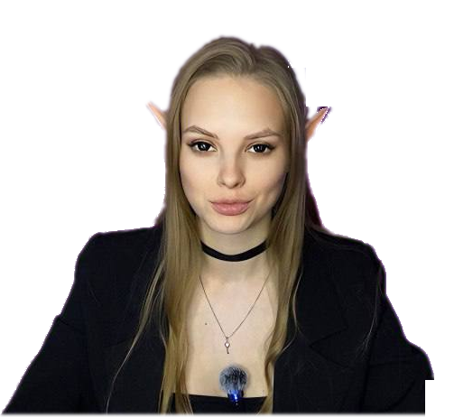

7 МОБОВ
КАЖДЫЕ 10 СЕК
ГОЛДФАРМ БЕЗ КОНКУРЕНТОВ
ЭТУ ТОЧКУ
НИКТО НЕ ФАРМИТ
⬅
ЗАПРЕТНЫЙ
ГОЛДФАРМ
С 12 УРОВНЯ ✓
ПОЛПОЛЯНЫ
МОБОВ
И Я НЕ УМЕРЛА
30 УРОВЕНЬ
НА ОГРОМНЫХ ПУЛЛАХ
+
МАГ + ШАМАН
ЛУЧШАЯ ФЕРМА
ДО 30 УРОВНЯ
ТОЛЬКО ДЛЯ ОРДЫ?!